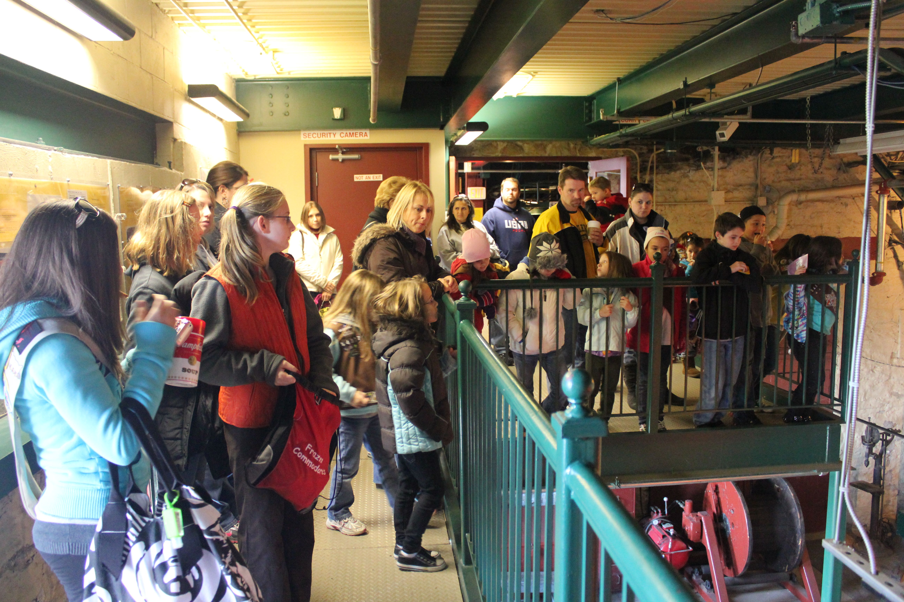
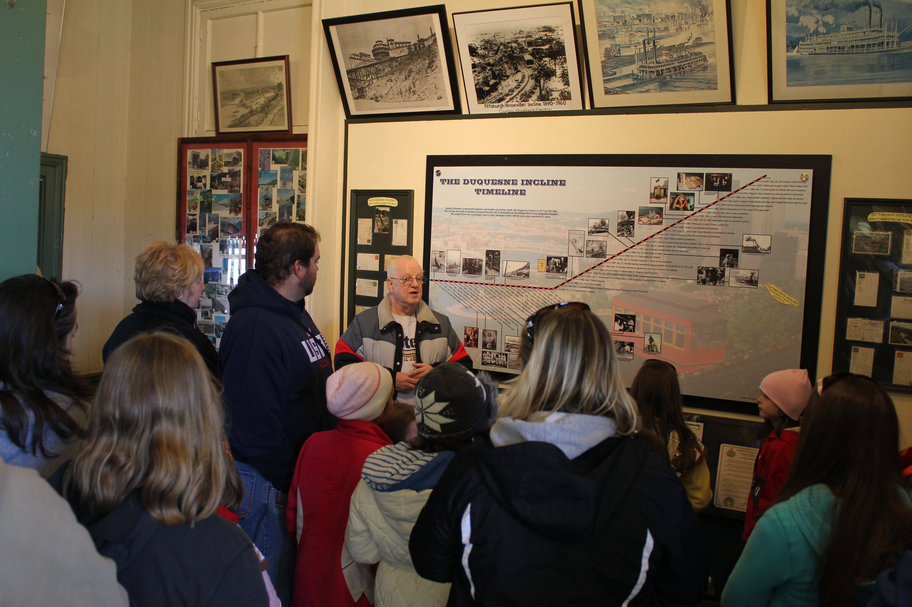
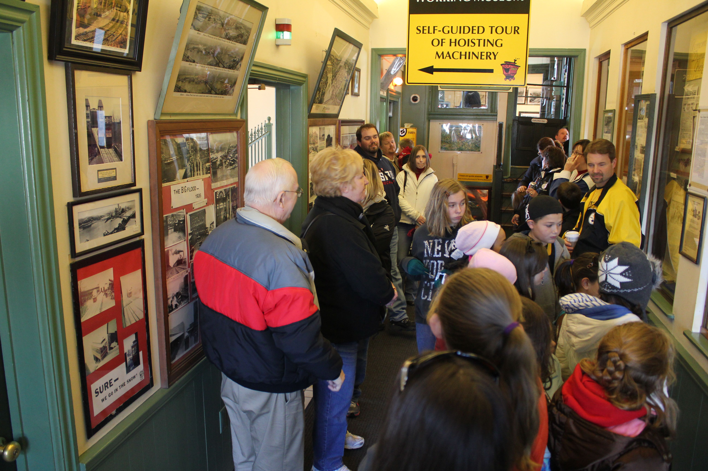
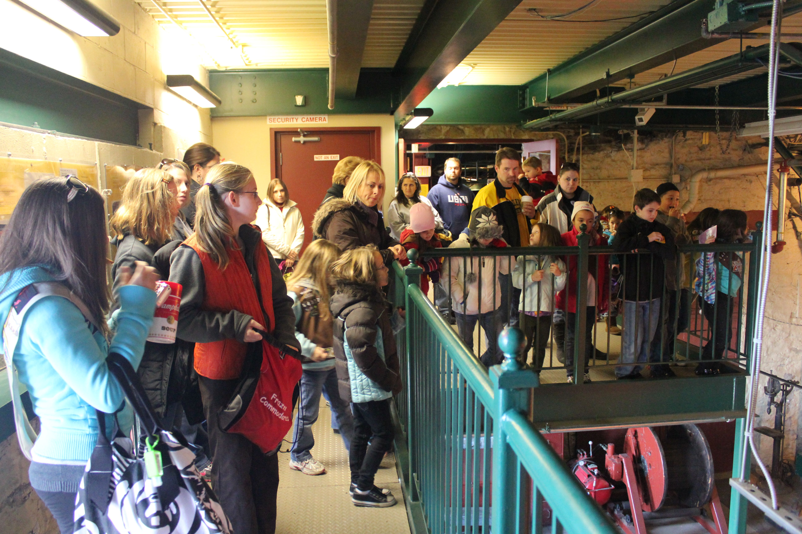
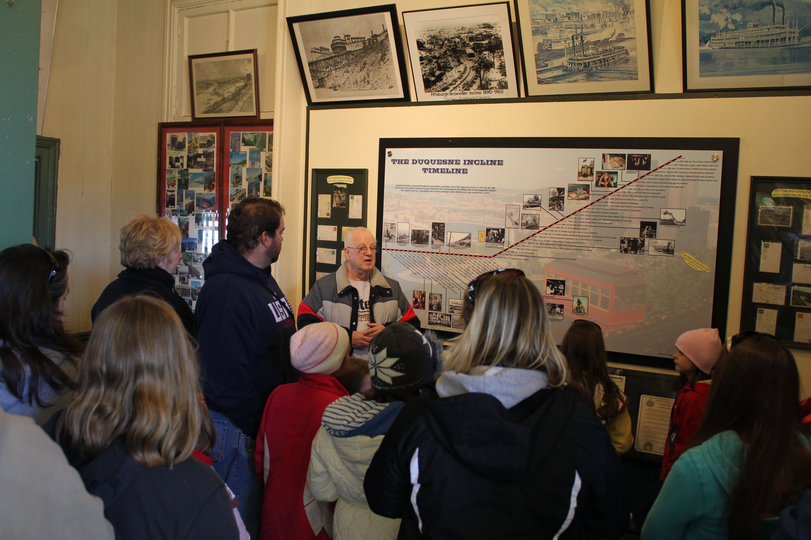
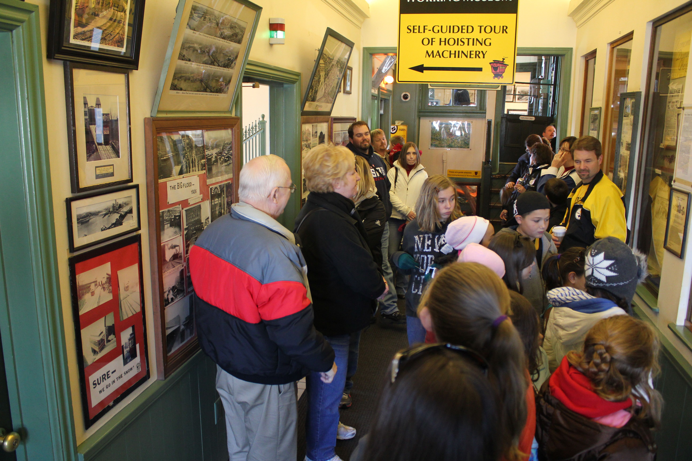

Discover the Duquesne Incline through our collection of media resources including informational videos, photo galleries, and aerial views.
Our informational video provides a comprehensive overview of the Duquesne Incline's history, operation, and significance to Pittsburgh.

 






Browse our collection of historical and contemporary photos showcasing the Duquesne Incline throughout the seasons.